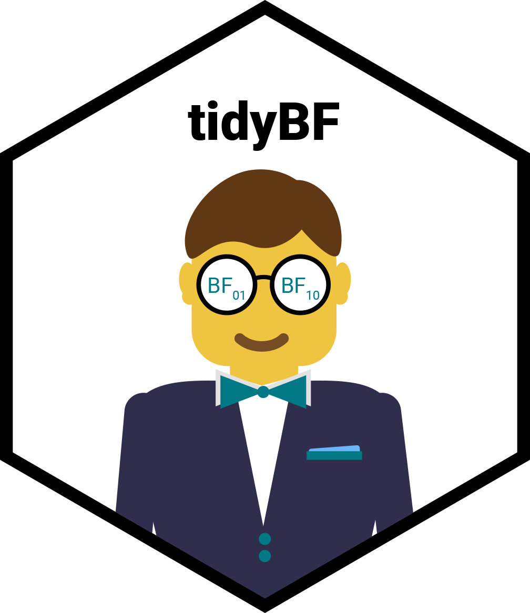
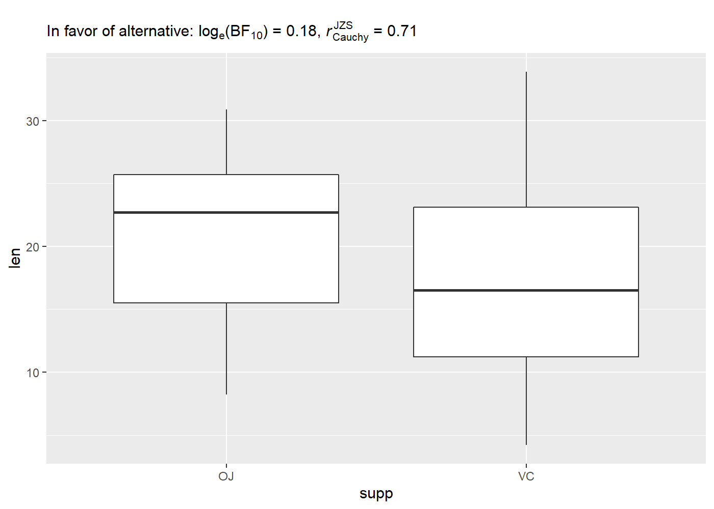
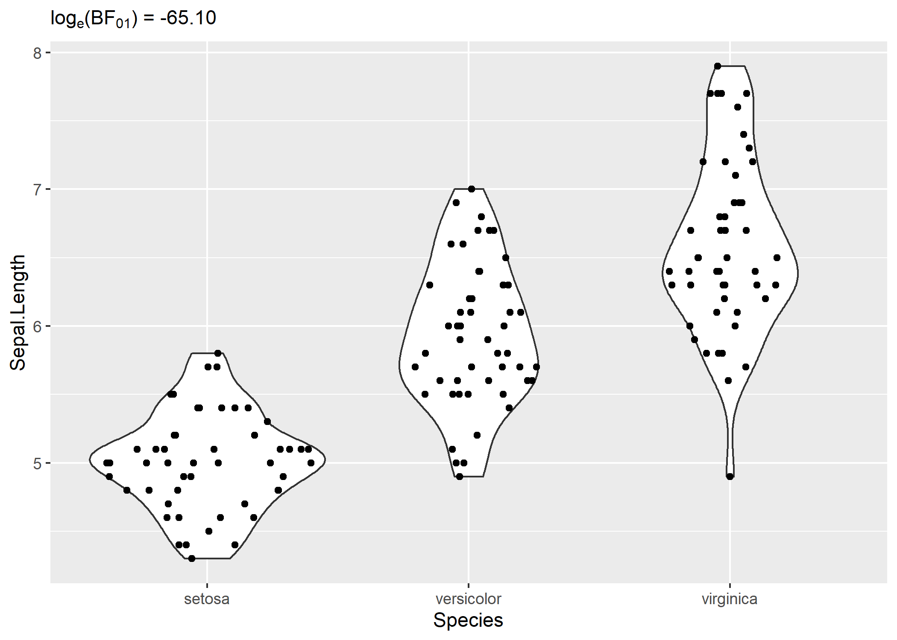
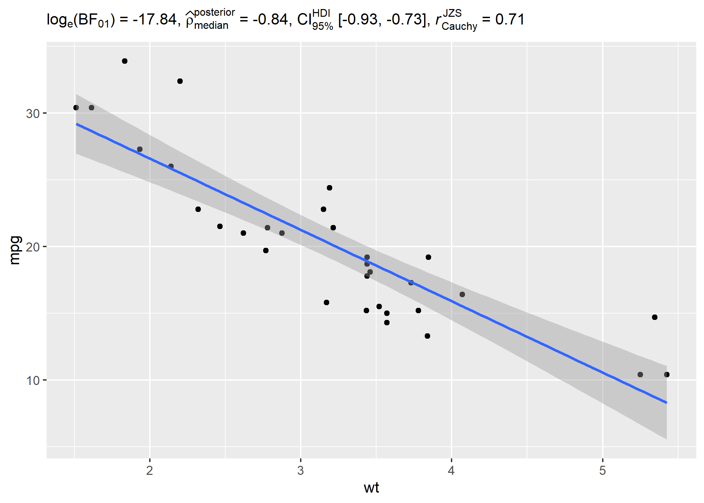
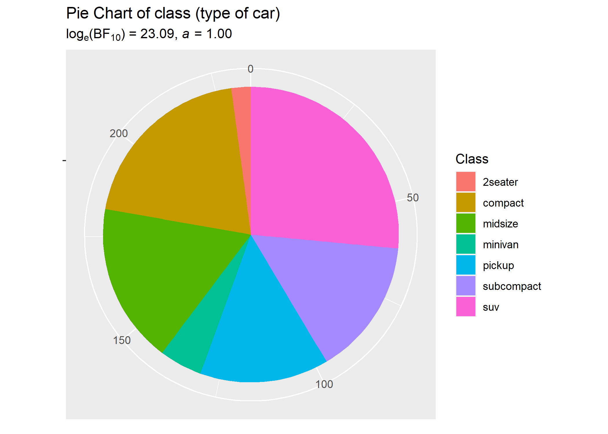
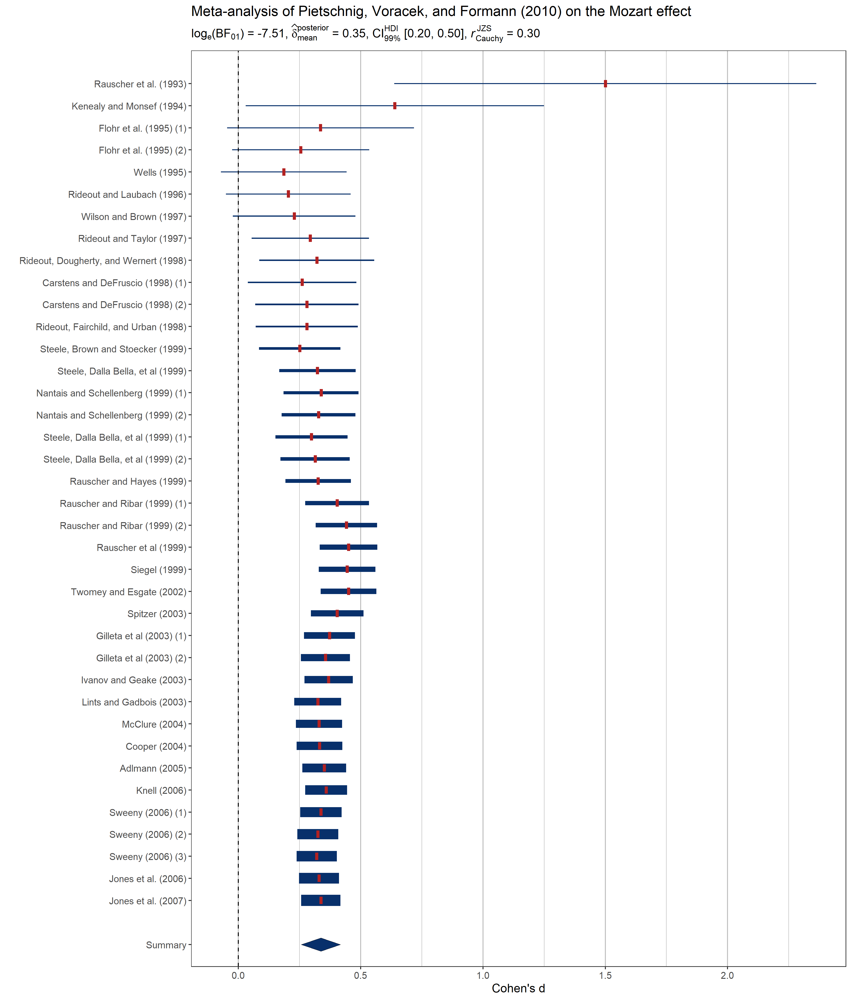

Overview 
tidyBF package is a tidy wrapper around the BayesFactor package that always expects the data to be in the tidy format and return a tibble containing Bayes Factor values. Additionally, it provides a more consistent syntax and by default returns a dataframe with rich details. These functions can also return expressions containing results from Bayes Factor tests that can then be displayed in custom plots.
Installation
To get the latest, stable CRAN release:
install.packages("tidyBF")
You can get the development version of the package from GitHub. To see what new changes (and bug fixes) have been made to the package since the last release on CRAN, you can check the detailed log of changes here: https://indrajeetpatil.github.io/tidyBF/news/index.html
If you are in hurry and want to reduce the time of installation, prefer-
# needed package to download from GitHub repo install.packages("remotes") remotes::install_github( repo = "IndrajeetPatil/tidyBF", # package path on GitHub quick = TRUE # skips docs, demos, and vignettes )
If time is not a constraint-
remotes::install_github( repo = "IndrajeetPatil/tidyBF", # package path on GitHub dependencies = TRUE, # installs packages which `tidyBF` depends on upgrade_dependencies = TRUE # updates any out of date dependencies )
Summary of available tests
Behind the curtains, tidyBF provides an easier syntax to marry functionalities provided by the following two packages in a unified framework:
BayesFactor: for hypothesis testingbayestestR: for posterior estimation
| Analysis | Function | Hypothesis testing | Estimation | Function |
|---|---|---|---|---|
| (one/two-sample) t-test | bf_ttest |
Yes | Yes | BayesFactor::ttestBF |
| one-way ANOVA | bf_oneway_anova |
Yes | No | BayesFactor::anovaBF |
| correlation | bf_corr_test |
Yes | Yes | BayesFactor::correlationBF |
| (one/two-way) contingency table | bf_contingency_tab |
Yes | No | BayesFactor::contingencyTableBF |
| random-effects meta-analysis | bf_meta |
Yes | Yes | metaBMA::meta_random |
Notation
The results are always displayed as a Bayes Factor in favor of the null hypothesis over the alternative hypothesis. Additionally, the values are logged to avoid huge numbers. Therefore, the notation is: .
Also, please note that this makes flipping the evidence easy: = -
Benefits
Below are few concrete examples of where tidyBF wrapper might provide a more friendly way to access output from or write functions around BayesFactor.
Syntax consistency
BayesFactor is inconsistent with its formula interface. tidyBF avoids this as it doesn’t provide the formula interface for any of the functions.
# setup set.seed(123) # with `BayesFactor` ---------------------------------------- suppressPackageStartupMessages(library(BayesFactor)) data(sleep) # independent t-test: accepts formula interface ttestBF(formula = wt ~ am, data = mtcars) #> Bayes factor analysis #> -------------- #> [1] Alt., r=0.707 : 1383.367 ±0% #> #> Against denominator: #> Null, mu1-mu2 = 0 #> --- #> Bayes factor type: BFindepSample, JZS # paired t-test: doesn't accept formula interface ttestBF(formula = extra ~ group, data = sleep, paired = TRUE) #> Error in ttestBF(formula = extra ~ group, data = sleep, paired = TRUE): Cannot use 'paired' with formula. # with `tidyBF` ---------------------------------------- library(tidyBF) # independent t-test bf_ttest(data = mtcars, x = am, y = wt) #> # A tibble: 1 x 13 #> term estimate conf.low conf.high pd rope.percentage #> <chr> <dbl> <dbl> <dbl> <dbl> <dbl> #> 1 Difference -1.26 -1.70 -0.820 1 0 #> prior.distribution prior.location prior.scale effect component bf10 #> <chr> <dbl> <dbl> <chr> <chr> <dbl> #> 1 cauchy 0 0.707 fixed conditional 1383. #> log_e_bf10 #> <dbl> #> 1 7.23 # paired t-test bf_ttest(data = sleep, x = group, y = extra, paired = TRUE, subject.id = ID) #> # A tibble: 1 x 13 #> term estimate conf.low conf.high pd rope.percentage #> <chr> <dbl> <dbl> <dbl> <dbl> <dbl> #> 1 Difference 1.40 0.697 2.10 0.996 0 #> prior.distribution prior.location prior.scale effect component bf10 #> <chr> <dbl> <dbl> <chr> <chr> <dbl> #> 1 cauchy 0 0.707 fixed conditional 17.3 #> log_e_bf10 #> <dbl> #> 1 2.85
Expressions for plots
Although all functions default to returning a dataframe, you can also use it to extract expressions that can be displayed in plots.
t-test
# setup set.seed(123) library(ggplot2) # using the expression to display details in a plot ggplot(ToothGrowth, aes(supp, len)) + geom_boxplot() + # two-sample t-test results in an expression labs(subtitle = bf_ttest(ToothGrowth, supp, len, output = "expression"))

anova
# setup set.seed(123) library(ggplot2) library(ggforce) library(tidyBF) # plot with subtitle ggplot(iris, aes(x = Species, y = Sepal.Length)) + geom_violin() + geom_sina() + labs(subtitle = bf_oneway_anova(iris, Species, Sepal.Length, output = "expression"))

correlation test
# setup set.seed(123) library(ggplot2) library(tidyBF) # using the expression to display details in a plot ggplot(mtcars, aes(wt, mpg)) + # Pearson's r results in an expression geom_point() + geom_smooth(method = "lm") + labs(subtitle = bf_corr_test(mtcars, wt, mpg, output = "expression")) #> `geom_smooth()` using formula 'y ~ x'

contingency tabs analysis
# setup set.seed(123) library(ggplot2) library(tidyBF) # basic pie chart ggplot(as.data.frame(table(mpg$class)), aes(x = "", y = Freq, fill = factor(Var1))) + geom_bar(width = 1, stat = "identity") + theme(axis.line = element_blank()) + # cleaning up the chart and adding results from one-sample proportion test coord_polar(theta = "y", start = 0) + labs( fill = "Class", x = NULL, y = NULL, title = "Pie Chart of class (type of car)", subtitle = bf_contingency_tab(as.data.frame(table(mpg$class)), Var1, counts = Freq, output = "h1") )

meta-analysis
# setup set.seed(123) library(metaviz) library(ggplot2) # meta-analysis forest plot with results random-effects meta-analysis viz_forest( x = mozart[, c("d", "se")], study_labels = mozart[, "study_name"], xlab = "Cohen's d", variant = "thick", type = "cumulative" ) + # use `statsExpressions` to create expression containing results labs( title = "Meta-analysis of Pietschnig, Voracek, and Formann (2010) on the Mozart effect", subtitle = bf_meta(dplyr::rename(mozart, estimate = d, std.error = se), output = "h1") ) + theme(text = element_text(size = 12))

Convenient way to extract detailed output from BayesFactor objects
The package provides bf_extractor function to conveniently extract important details from these objects:
# setup set.seed(123) library(tidyBF) library(BayesFactor) data(puzzles) # model result <- anovaBF( RT ~ shape * color + ID, data = puzzles, whichRandom = "ID", whichModels = "top", progress = FALSE ) # extract details bf_extractor(result) #> # A tibble: 21 x 13 #> term estimate conf.low conf.high pd rope.percentage #> <chr> <dbl> <dbl> <dbl> <dbl> <dbl> #> 1 mu 45.0 43.9 46.1 1 0 #> 2 shape-round 0.429 0.131 0.741 0.992 0.141 #> 3 shape-square -0.429 -0.741 -0.131 0.992 0.141 #> 4 color-color -0.426 -0.711 -0.0995 0.990 0.162 #> 5 color-monochromatic 0.426 0.0995 0.711 0.990 0.162 #> 6 ID-1 2.47 1.04 3.98 0.995 0 #> 7 ID-2 0.439 -1.02 1.78 0.698 0.231 #> 8 ID-3 0.907 -0.501 2.32 0.848 0.156 #> 9 ID-4 0.466 -0.959 1.98 0.704 0.218 #> 10 ID-5 3.17 1.83 4.66 0.999 0 #> prior.distribution prior.location prior.scale effect component bf10 #> <chr> <dbl> <dbl> <chr> <chr> <dbl> #> 1 <NA> NA NA fixed extra 2.65 #> 2 <NA> NA NA fixed conditional 0.233 #> 3 <NA> NA NA fixed conditional 0.239 #> 4 <NA> NA NA fixed conditional 2.65 #> 5 <NA> NA NA fixed conditional 0.233 #> 6 <NA> NA NA random conditional 0.239 #> 7 <NA> NA NA random conditional 2.65 #> 8 <NA> NA NA random conditional 0.233 #> 9 <NA> NA NA random conditional 0.239 #> 10 <NA> NA NA random conditional 2.65 #> log_e_bf10 #> <dbl> #> 1 0.974 #> 2 -1.45 #> 3 -1.43 #> 4 0.974 #> 5 -1.45 #> 6 -1.43 #> 7 0.974 #> 8 -1.45 #> 9 -1.43 #> 10 0.974 #> # ... with 11 more rows
Acknowledgments
The hexsticker was generously designed by Sarah Otterstetter (Max Planck Institute for Human Development, Berlin).
Code of Conduct
Please note that the tidyBF project is released with a Contributor Code of Conduct. By contributing to this project, you agree to abide by its terms.